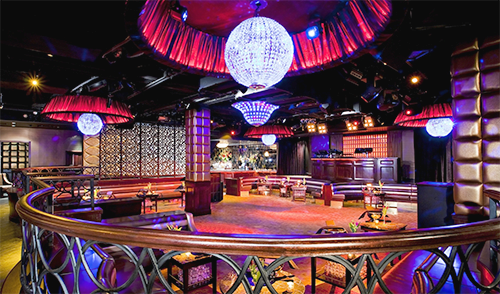

About our Grams
Gram & Jam understands that the best chefs in the world are, naturally, our grandmothers. Here we serve 'em "just like grandma made it!" Gram & Jam employs more than a dozen literal grandmother chefs from all corners of the globe. We offer more than twenty regional delicacies ranging from Philly Cheesesteaks to Russian borscht. Gram & Jam is your new home. Stop in, try something new, and be sure to send your compliments to the chef! They only want to see you happy.
Our grandmothers hail from these fourteen locales:
Various United States
Hawaii
Australia
Brazil
Canada
The Dominican Republic
England
Hong Kong
Ireland
Japan
 Mexico
Mexico
Poland
Russia
Spain
About our Jams
Starting at 9:00 p.m. every night of the week, our committed cleanup crew transorms Gram & Jam into the hottest nightclub scene in northeastern Pennsylvania. Every night is a theme night! Come out and enjoy our group contests, trivia, karaoke, dance-offs, and whatever else. Our rotating panel of DJs and esteemed lineup of performance artists will keep the beats boppin' until an indeterminate time in the morning. That's right; Gram & Jam doesn't have to close!
You must see it to believe it.
